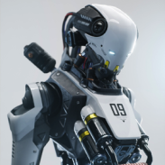

GENX II
Robot is a new kind of on-demand infrastructure: autonomous platforms will combine together to form floating bridges and stages, collect waste, deliver goods, and transport people and more.

Orbitter X
Several robots have been made which can walk reliably on two legs, however none have yet been made which are as robust as a human.
Previous
Next